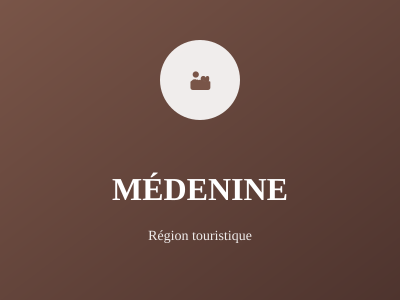

Île de Djerba et ksour

Région de l'île de Djerba et des ksour (villages fortifiés). Médenine est réputée pour sa destination touristique de Djerba et son patrimoine architectural berbère unique et traditionnel.